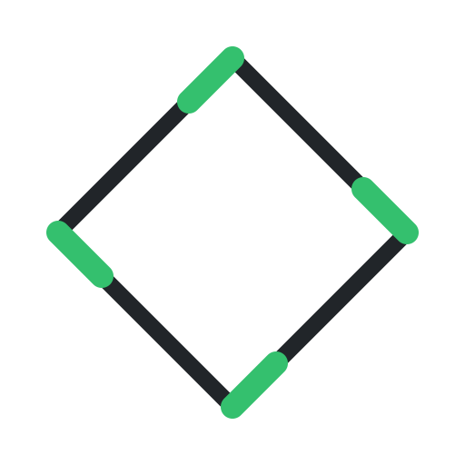

A live browser solver for the four-sided star quiver
Let \(Q\) be the four-sided star quiver with dimension vector \((2,1,1,1,1)\). A representation of \(Q\) consists of a \(2\times 4\) matrix \(x\) with columns \(x_1,\dots,x_4\), and a \(4\times 2\) matrix \(y\) with rows \(y_1,\dots,y_4\). The hyperpolygon space \(\mathcal X(\vec\beta)\) is the four-dimensional moduli space of solutions to the moment map equations
\[ \mu_{\mathrm{SL}(2,\mathbb C)}(x,y)=\sum_{i=1}^{4}x_iy_i=0, \] \[ \mu_{\mathrm{GL}(1,\mathbb C),i}(x,y)=y_ix_i=0, \] \[ \mu_{\mathrm{SU}(2)}(x,y)=\sum_{i=1}^{4}(x_ix_i^\dagger)_0-(y_i^\dagger y_i)_0=0, \] \[ \mu_{\mathrm{U}(1),i}(x,y)=\frac12\left(|x_i|^2-|y_i|^2\right)=\beta_i, \]
up to the action of the symmetry group \(G=\mathrm{SU}(2)\times\mathrm{U}(1)^4\). Set \(v_i=(x_ix_i^\dagger)_0\) and \(w_i=(y_i^\dagger y_i)_0\). Then \(\mu_{\mathrm{GL}(1,\mathbb C),i}=0\) makes \(v_i\) and \(w_i\) point in opposite directions, \(\mu_{\mathrm{U}(1),i}=\beta_i\) constrains the side lengths \(|v_i|-|w_i|=\sqrt2\,\beta_i\), and \(\mu_{\mathfrak{su}(2)}=0\) is the closure condition \(\sum_i(v_i-w_i)=0\). The \(v_i\) and \(w_i\) therefore assemble into a telescoping polygon in \(\mathfrak{su}(2)\cong\mathbb R^3\), taken up to \(\mathrm{SO}(3)\) rotations.
This simulation solves the moment map equations live as you vary the sliders. The right view shows your position within the four-dimensional moduli space; the left view displays the corresponding hyperpolygon. Click Tutorial for a guided tour.
Drag the sliders (r, θ, t, φ and the stability parameters βi) to walk the moduli space, and use Cross Wall to flop between stability chambers.